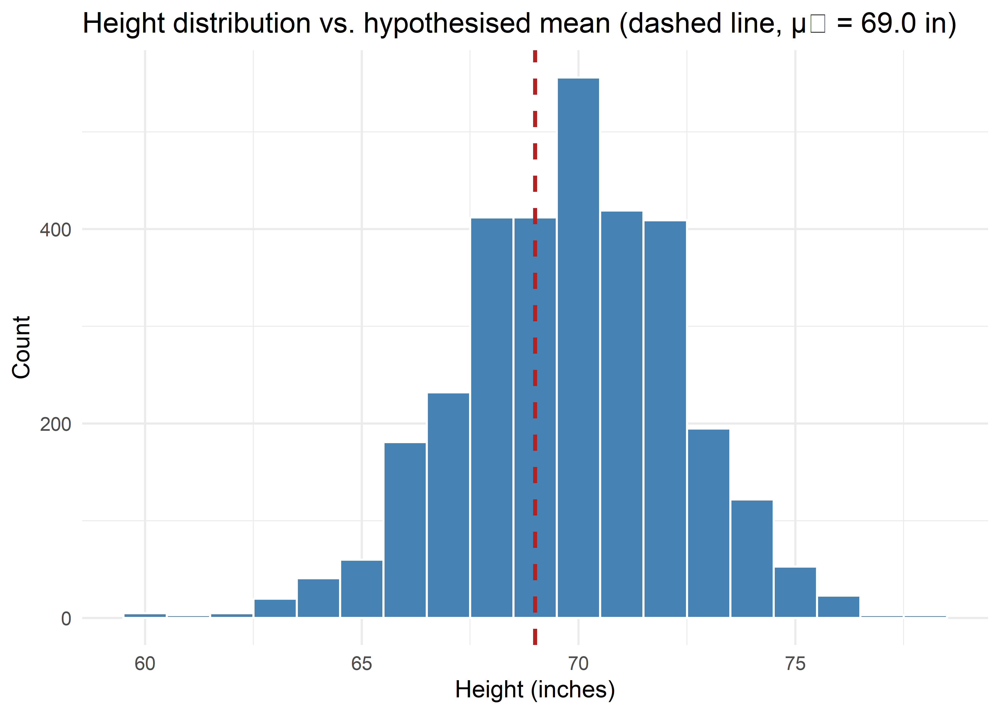
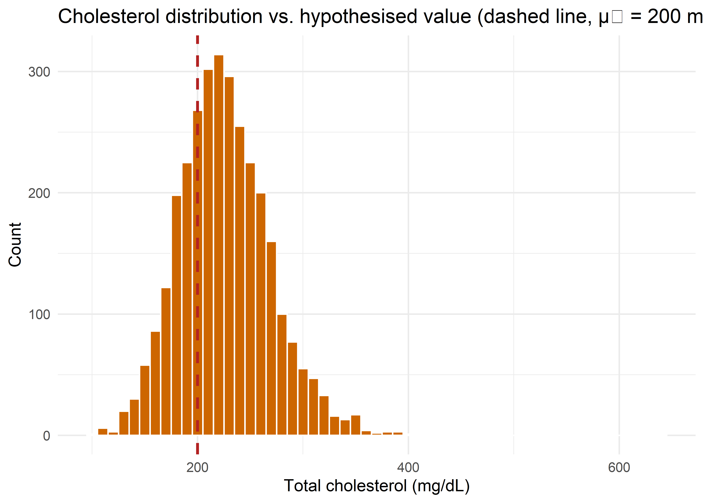

| id | height |
|---|---|
| 11348 | 74 |
| 22029 | 69 |
| 13114 | 67 |
| 11238 | 72 |
| 3777 | 72 |
| 10157 | 67 |
| 21192 | 67 |
| 21159 | 68 |
| 3944 | 66 |
| 3118 | 72 |
Comparing a Sample Mean to a Fixed Value
Learning Objectives
By the end of this chapter, you should be able to:
- State the situation in which a single sample mean is compared with a fixed (hypothesised) value, and translate a research question into \(H_0\)/\(H_1\).
- State the assumptions, formula, and correct interpretation of the one-sample \(t\)-test.
- State when a \(z\)-test is appropriate instead of a \(t\)-test, and carry out both by hand.
- Calculate the one-sample \(t\)-statistic and its confidence interval by hand from raw data.
- State the assumptions, formula, and correct interpretation of the Wilcoxon signed-rank test, the nonparametric alternative to the one-sample \(t\)-test.
- Calculate the Wilcoxon signed-rank statistic by hand, including handling of tied and zero differences.
- Reproduce all three procedures in R, using the Western Collaborative Group Study (WCGS) data set, and correctly choose among them for a given variable.
Comparing One Sample Mean to a Fixed Value
A very common question in health research is whether a group’s average on some measurement differs from a known or hypothesised standard: a clinical guideline, a historical population value, a regulatory limit, or a target used in quality improvement. For example:
- Is the mean systolic blood pressure of a cohort different from the widely used clinical benchmark of \(120\) mmHg?
- Does the mean height of a cohort of men differ from a commonly cited population reference of \(69.0\) inches?
- Is a cohort’s mean total cholesterol above the “desirable” clinical threshold of \(200\) mg/dL?
In each case there is one sample and one fixed comparison value, denoted \(\mu_0\). The hypotheses are
\[ H_0: \mu = \mu_0 \qquad \text{vs.} \qquad H_1: \mu \ne \mu_0 \quad (\text{two-sided}) \]
or a one-sided alternative (\(H_1: \mu > \mu_0\) or \(\mu < \mu_0\)) when justified by the research question.
Three procedures are commonly used, in decreasing order of how much they assume about the data:
| Test | Assumes population SD \(\sigma\) known? | Assumes (approx.) normal data? | Uses |
|---|---|---|---|
| One-sample \(z\)-test | Yes | Yes | Raw values |
| One-sample \(t\)-test | No (estimates \(\sigma\) with \(s\)) | Yes | Raw values |
| Wilcoxon signed-rank test | No | No — only symmetry around the centre | Ranks of the differences \(x_i - \mu_0\) |
One-Sample \(t\)-Test (and \(z\)-Test When \(\sigma\) Is Known)
Hypotheses
\[ H_0: \mu = \mu_0 \qquad H_1: \mu \ne \mu_0 \]
Assumptions
- The outcome is continuous (interval/ratio) numeric.
- Observations are independent and represent a random sample from the population of interest.
- The population is (approximately) normally distributed — or \(n\) is large enough that the Central Limit Theorem makes the sampling distribution of \(\bar x\) approximately normal.
- For the \(z\)-test: the population standard deviation \(\sigma\) is known (e.g., from an established reference population), not estimated from the sample.
- For the \(t\)-test (far more common in practice): \(\sigma\) is unknown and estimated from the sample by \(s\).
Test statistics
\(t\)-test (the standard case: \(\sigma\) unknown):
\[ t = \frac{\bar x - \mu_0}{s/\sqrt n} \qquad \sim \; t_{(n-1)} \text{ under } H_0 \tag{20.1}\]
\(z\)-test (only when \(\sigma\) is genuinely known independently of the sample):
\[ z = \frac{\bar x - \mu_0}{\sigma/\sqrt n} \qquad \sim \; N(0,1) \text{ under } H_0 \tag{20.2}\]
In practice \(\sigma\) is almost never known in advance, so the \(t\)-test is the default choice; the \(z\)-test is mostly a teaching device and is occasionally justified when a very well-established reference standard deviation is substituted for \(\sigma\). Note that as \(n\) grows large, \(s \to \sigma\) and the \(t\)-distribution converges to the standard normal, so the two tests give nearly identical results in large samples (as we will see with the full WCGS data).
Confidence interval for \(\mu\)
\[ \bar x \pm t_{(1-\alpha/2,\; n-1)} \cdot \frac{s}{\sqrt n} \qquad \text{(t-test version)} \]
\[ \bar x \pm z_{(1-\alpha/2)} \cdot \frac{\sigma}{\sqrt n} \qquad \text{(z-test version)} \]
Interpretation
A significant result (\(p < \alpha\), or a CI excluding \(\mu_0\)) indicates the sample mean is unlikely to have arisen from a population with mean \(\mu_0\). As always, statistical significance should be reported alongside the estimated mean, the CI, and the magnitude of the difference — which carries the substantive/clinical meaning.
Manual (Hand) Calculation of the One-Sample \(t\)-Test
We reuse the same reproducible random subsample of \(n=10\) men from the WCGS data used in the correlation chapter (set.seed(123)), and test whether their mean height differs from a fixed reference value of \(\mu_0 = 69.0\) inches.
Step 1: Compute the sample mean and standard deviation
#> n mean sd se
#> 1 10 69.4 2.836273 0.8969083\[ \bar x = \frac{\sum x_i}{n} = \frac{694}{10} = 69.4, \qquad s = \sqrt{\frac{\sum(x_i-\bar x)^2}{n-1}} = \sqrt{\frac{72.4}{9}} = 2.836 \]
\[ SE(\bar x) = \frac{s}{\sqrt n} = \frac{2.836}{\sqrt{10}} = 0.897 \]
Step 2: Compute the test statistic
\[ t = \frac{\bar x-\mu_0}{SE(\bar x)} = \frac{69.4-69.0}{0.897} = \frac{0.4}{0.897} \]
#> t df p_value
#> 1 0.4459765 9 0.6661501With \(t = 0.446\) on \(9\) df, \(p = 0.666\): we fail to reject \(H_0\) — this small sample provides no evidence that mean height differs from \(69.0\) inches.
Step 3: 95% confidence interval
\[ \bar x \pm t_{(0.975,\,9)}\times SE(\bar x) = 69.4 \pm 2.262 \times 0.897 \]
#> t_critical lower upper
#> 1 2.262157 67.37105 71.42895Step 4: Verify against R’s built-in function
t.test(x, mu = mu0)#>
#> One Sample t-test
#>
#> data: x
#> t = 0.45, df = 9, p-value = 0.7
#> alternative hypothesis: true mean is not equal to 69
#> 95 percent confidence interval:
#> 67.37 71.43
#> sample estimates:
#> mean of x
#> 69.4The hand-calculated \(\bar x\), \(t\), \(df\), \(p\)-value, and \(95\%\) CI match R’s t.test() output exactly.
Manual Demonstration of the \(z\)-Test (\(\sigma\) Assumed Known)
Suppose, hypothetically, that a large historical reference population establishes the standard deviation of adult male height as \(\sigma = 2.5\) inches, and we are willing to treat this as known rather than estimated from our own small sample. The \(z\)-test then uses \(\sigma\) in place of \(s\):
\[ z = \frac{\bar x-\mu_0}{\sigma/\sqrt n} = \frac{69.4 - 69.0}{2.5/\sqrt{10}} \]
sigma0 <- 2.5
z_stat <- (xbar - mu0) / (sigma0 / sqrt(n))
p_z <- 2 * pnorm(-abs(z_stat))
ci_z <- xbar + c(-1, 1) * 1.96 * (sigma0 / sqrt(n))
data.frame(z = z_stat, p_value = p_z, ci_lower = ci_z[1], ci_upper = ci_z[2])#> z p_value ci_lower ci_upper
#> 1 0.506 0.6129 67.85 70.95\(z = 0.506\), \(p = 0.613\) — the same conclusion as the \(t\)-test (no evidence against \(H_0\)), and the numeric value of \(z\) is close to \(t\) because \(s=2.836\) and the assumed \(\sigma=2.5\) are similar. Notice the \(z\)-test’s CI (\(67.85\) to \(70.95\)) is slightly narrower than the \(t\)-test’s CI (\(67.37\) to \(71.43\)) for the same data — using the standard normal critical value (\(1.96\)) instead of the larger \(t\) critical value (\(2.262\) at \(9\) df) reflects the (arguably optimistic) assumption that \(\sigma\) is known exactly rather than estimated with additional uncertainty from a small sample.
Wilcoxon Signed-Rank Test
When to use it instead of the \(t\)-test
The Wilcoxon signed-rank test is the nonparametric counterpart to the one-sample \(t\)-test. Prefer it when:
- The outcome is ordinal, or is numeric but clearly non-normal / skewed (as is common for laboratory values such as cholesterol, triglycerides, or cell counts).
- The sample size is small, so the Central Limit Theorem cannot be relied upon to rescue non-normality.
- There are outliers that would unduly influence the mean and \(t\)-statistic.
Rather than assuming normality, the Wilcoxon signed-rank test assumes only that the distribution of \(x_i - \mu_0\) is symmetric about its centre; it tests whether that centre (formally, the median of the differences) equals zero.
\[ H_0: \text{median}(x_i - \mu_0) = 0 \qquad H_1: \text{median}(x_i-\mu_0)\ne 0 \]
Procedure
- Compute the differences \(d_i = x_i - \mu_0\) for each subject.
- Discard any \(d_i = 0\) (subjects exactly equal to \(\mu_0\)), reducing \(n\) accordingly.
- Rank the absolute differences \(|d_i|\) from smallest (rank 1) to largest, giving tied values the average of the ranks they span.
- Attach back the original sign of \(d_i\) to each rank (“signed ranks”).
- Sum the ranks of the positive differences (\(W^+\)) and, separately, of the negative differences (\(W^-\)); note \(W^+ + W^- = \dfrac{n(n+1)}{2}\) always.
- The test statistic is (by one common textbook convention) \(W = \min(W^+, W^-)\); small values of \(W\) are evidence against \(H_0\). Software such as R instead commonly reports \(V = W^+\) directly — both are exactly equivalent for testing purposes, since \(W^+\) and \(W^-\) carry the same information.
- For small \(n\), compare \(W\) to tables of exact critical values. For larger \(n\) (a common rule of thumb: \(n>20\), though software typically applies it more generally), use the normal approximation:
\[ z = \frac{W-\mu_W}{\sigma_W}, \qquad \mu_W=\frac{n(n+1)}{4}, \qquad \sigma_W=\sqrt{\frac{n(n+1)(2n+1)}{24}} \tag{23.1}\]
(A small downward correction to \(\sigma_W\) is applied when there are tied ranks, and a continuity correction of \(0.5\) is often applied to the numerator — both refinements are what statistical software does by default.)
Assumptions and properties
- Requires the outcome to be at least ordinal, and the distribution of differences to be (approximately) symmetric about its centre — a much weaker requirement than normality.
- Robust to outliers, since only ranks (not raw magnitudes) enter the calculation.
- Less statistical power than the \(t\)-test when the normality assumption genuinely holds, since it discards some numeric information by ranking.
- Naturally estimates the median (or “pseudomedian” — the Hodges–Lehmann estimator) rather than the mean.
Manual (Hand) Calculation of the Wilcoxon Signed-Rank Test
We use the same reproducible random subsample of \(n=10\) men (with complete cholesterol) from the correlation chapter (set.seed(321)), and test whether median total cholesterol differs from the clinical “desirable” threshold of \(\mu_0=200\) mg/dL — a variable we already know is right-skewed, making this a good candidate for a nonparametric test.
| id | chol |
|---|---|
| 3574 | 279 |
| 12432 | 288 |
| 3562 | 205 |
| 2242 | 212 |
| 12334 | 164 |
| 16026 | 230 |
| 3711 | 175 |
| 3069 | 241 |
| 3739 | 228 |
| 3281 | 205 |
Step 1: Compute differences, rank absolute differences, reattach sign
Note subjects 3 and 10 are tied at \(|d| = 5\) (chol \(=205\), \(d=5\)): both receive the average rank \((1+2)/2 = 1.5\).
| ID | Cholesterol | \(d=x-200\) | \(\lvert d\rvert\) | Rank of \(\lvert d\rvert\) | Signed rank |
|---|---|---|---|---|---|
| 3574 | 279 | 79 | 79 | 9.0 | 9.0 |
| 12432 | 288 | 88 | 88 | 10.0 | 10.0 |
| 3562 | 205 | 5 | 5 | 1.5 | 1.5 |
| 2242 | 212 | 12 | 12 | 3.0 | 3.0 |
| 12334 | 164 | -36 | 36 | 7.0 | -7.0 |
| 16026 | 230 | 30 | 30 | 6.0 | 6.0 |
| 3711 | 175 | -25 | 25 | 4.0 | -4.0 |
| 3069 | 241 | 41 | 41 | 8.0 | 8.0 |
| 3739 | 228 | 28 | 28 | 5.0 | 5.0 |
| 3281 | 205 | 5 | 5 | 1.5 | 1.5 |
Step 2: Sum the positive and negative signed ranks
#> W+ W- sum (check) expected n(n+1)/2
#> 1 44 11 55 55\(W^+ = 44\), \(W^- = 11\); the two sums correctly add to \(n(n+1)/2 = 55\). Using the min-statistic convention, \(W = \min(44,11) = 11\).
Step 3: Normal approximation (since \(n\) is small, this is illustrative; R uses an exact/tie-adjusted method by default)
\[ \mu_W = \frac{n(n+1)}{4} = \frac{10\times11}{4}=27.5, \qquad \sigma_W = \sqrt{\frac{n(n+1)(2n+1)}{24}} = \sqrt{\frac{10\times11\times21}{24}} = \sqrt{96.25}=9.811 \]
\[ z = \frac{W-\mu_W}{\sigma_W} = \frac{11-27.5}{9.811} \]
#> mu_W sigma_W W z p_value
#> 1 27.5 9.810708 11 -1.681836 0.0926007By hand (uncorrected normal approximation): \(z=-1.68\), two-sided \(p \approx 0.093\) — a borderline result, not significant at the conventional \(5\%\) level for this small subsample.
Step 4: Verify against R’s built-in function
#>
#> Wilcoxon signed rank test with continuity correction
#>
#> data: cx
#> V = 44, p-value = 0.1027
#> alternative hypothesis: true location is not equal to 200#>
#> Wilcoxon signed rank test
#>
#> data: cx
#> V = 44, p-value = 0.09239
#> alternative hypothesis: true location is not equal to 200R reports \(V = 44\) — this is simply \(W^+\), the sum of the positive signed ranks, which is R’s chosen statistic (equivalent information to our \(W=\min(W^+,W^-)=11\)). With the continuity correction, \(p=0.103\); without it, \(p=0.092\), matching our hand calculation closely (the tiny remaining difference is R’s additional correction to \(\sigma_W\) for the tied rank at \(1.5\)). Both the manual and software results reach the same conclusion: no significant evidence against \(H_0\) in this small subsample.
Demonstration in R Using the Full WCGS Data Set
Variable 1: Height vs. a fixed reference of 69.0 inches (approximately normal - good case for \(t\)/\(z\))
ggplot(wcgs, aes(x = height)) +
geom_histogram(binwidth = 1, fill = "steelblue", colour = "white") +
geom_vline(xintercept = 69.0, colour = "firebrick", linewidth = 1, linetype = "dashed") +
labs(x = "Height (inches)", y = "Count",
title = "Height distribution vs. hypothesised mean (dashed line, μ₀ = 69.0 in)") +
theme_minimal(base_size = 12)
t.test(wcgs$height, mu = 69.0)#>
#> One Sample t-test
#>
#> data: wcgs$height
#> t = 17, df = 3153, p-value <2e-16
#> alternative hypothesis: true mean is not equal to 69
#> 95 percent confidence interval:
#> 69.69 69.87
#> sample estimates:
#> mean of x
#> 69.78Interpretation: mean height \(= 69.78\) in, \(95\%\) CI \((69.69,\,69.87)\), \(t(3153)=17.27\), \(p<0.001\). With the full cohort, even the small \(0.78\)-inch difference from \(69.0\) is highly statistically significant, because the huge sample size gives enormous precision — again a reminder to interpret the magnitude of the difference (well under one inch), not only the \(p\)-value.
xbar_full <- mean(wcgs$height); n_full <- length(wcgs$height)
z_full <- (xbar_full - 69.0) / (2.5 / sqrt(n_full))
p_full <- 2 * pnorm(-abs(z_full))
data.frame(mean = xbar_full, n = n_full, z = z_full, p_value = p_full)#> mean n z p_value
#> 1 69.78 3154 17.47 2.368e-68The \(z\)-test (assuming \(\sigma=2.5\) known) gives \(z=17.47\), \(p\approx2\times10^{-68}\) — the same conclusion as the \(t\)-test. With \(n=3{,}154\), \(s=2.53\) is so close to the assumed \(\sigma=2.5\), and the \(t\)-distribution with \(3{,}153\) df is so close to standard normal, that the two procedures are practically indistinguishable — illustrating why the \(t\)-test is used almost universally in practice: it gives the (safer) \(t\)-test answer even when a large sample would make a \(z\)-test numerically almost identical.
Variable 2: Cholesterol vs. a fixed clinical threshold of 200 mg/dL (right-skewed - good case for Wilcoxon)
ggplot(wcgs, aes(x = chol)) +
geom_histogram(binwidth = 10, fill = "darkorange3", colour = "white") +
geom_vline(xintercept = 200, colour = "firebrick", linewidth = 1, linetype = "dashed") +
labs(x = "Total cholesterol (mg/dL)", y = "Count",
title = "Cholesterol distribution vs. hypothesised value (dashed line, μ₀ = 200 mg/dL)") +
theme_minimal(base_size = 12)
shapiro.test(wcgs$chol)#>
#> Shapiro-Wilk normality test
#>
#> data: wcgs$chol
#> W = 0.98, p-value <2e-16As previously established, cholesterol is significantly right-skewed (Shapiro-Wilk \(p<0.001\); recall this test is oversensitive at \(n>3{,}000\), but the histogram confirms genuine skew) — a textbook case for preferring a nonparametric approach, or at least reporting it alongside the \(t\)-test.
t.test(wcgs$chol, mu = 200)#>
#> One Sample t-test
#>
#> data: wcgs$chol
#> t = 34, df = 3141, p-value <2e-16
#> alternative hypothesis: true mean is not equal to 200
#> 95 percent confidence interval:
#> 224.9 227.9
#> sample estimates:
#> mean of x
#> 226.4wilcox.test(wcgs$chol, mu = 200, conf.int = TRUE)#>
#> Wilcoxon signed rank test with continuity correction
#>
#> data: wcgs$chol
#> V = 3946853, p-value <2e-16
#> alternative hypothesis: true location is not equal to 200
#> 95 percent confidence interval:
#> 223.5 226.5
#> sample estimates:
#> (pseudo)median
#> 225Interpretation: the \(t\)-test gives mean \(=226.4\) mg/dL, \(95\%\) CI \((224.9,\,227.9)\), \(t(3141)=34.0\), \(p<0.001\). The Wilcoxon test gives an estimated (pseudo)median of \(225\) mg/dL, \(95\%\) CI \((223.5,\,226.5)\), \(p<0.001\). Both tests agree emphatically that cholesterol in this cohort is higher than the \(200\) mg/dL threshold — the effect here is so large that the choice of test does not change the conclusion, but the Wilcoxon estimate (pseudomedian \(225\)) is closer to the true sample median (\(223\)) than the mean (\(226.4\)), which is pulled upward by the right skew — illustrating why the median/pseudomedian can be the more representative summary for skewed clinical measurements.
data.frame(mean_chol = mean(wcgs$chol, na.rm = TRUE),
median_chol = median(wcgs$chol, na.rm = TRUE))#> mean_chol median_chol
#> 1 226.4 223Side-by-side summary across several variables
vars_list <- list(
list(var = "height", mu0 = 69.0),
list(var = "bmi", mu0 = 25.0),
list(var = "sbp", mu0 = 120.0),
list(var = "chol", mu0 = 200.0)
)
results <- do.call(rbind, lapply(vars_list, function(v) {
x <- wcgs[[v$var]]
ok <- !is.na(x)
tt <- t.test(x[ok], mu = v$mu0)
wt <- wilcox.test(x[ok], mu = v$mu0)
data.frame(Variable = v$var, mu0 = v$mu0, n = sum(ok),
Sample_mean = round(mean(x[ok]), 2),
Sample_median = round(median(x[ok]), 2),
t_stat = round(unname(tt$statistic), 2),
t_p = signif(tt$p.value, 3),
Wilcoxon_V = unname(wt$statistic),
Wilcoxon_p = signif(wt$p.value, 3))
}))
kable(results)| Variable | mu0 | n | Sample_mean | Sample_median | t_stat | t_p | Wilcoxon_V | Wilcoxon_p |
|---|---|---|---|---|---|---|---|---|
| height | 69 | 3154 | 69.78 | 70.00 | 17.27 | 0 | 2580961 | 0 |
| bmi | 25 | 3154 | 24.52 | 24.39 | -10.53 | 0 | 1852344 | 0 |
| sbp | 120 | 3154 | 128.63 | 126.00 | 32.07 | 0 | 3113301 | 0 |
| chol | 200 | 3142 | 226.37 | 223.00 | 34.05 | 0 | 3946853 | 0 |
Systolic blood pressure (sbp) vs. \(120\) mmHg and BMI (bmi) vs. \(25.0\) kg/m\(^2\) are included here as further examples — in both cases the cohort mean is significantly above the reference value, consistent with the WCGS cohort being composed of middle-aged, largely overweight men in the 1960s, and both parametric and nonparametric tests agree in direction and significance despite the skew present in these variables.
Choosing Among the Three Tests
| Situation | Recommended test |
|---|---|
| \(\sigma\) genuinely known from an external, trusted source | \(z\)-test |
| \(\sigma\) unknown (the usual case), data approximately normal or \(n\) large | One-sample \(t\)-test |
| Data ordinal, or numeric but clearly skewed / outlier-prone, especially with small \(n\) | Wilcoxon signed-rank test |
| Data extremely skewed with meaningful zeros/ties, or very small \(n\) with clear non-normality | Wilcoxon signed-rank test (or consider an exact sign test) |
Common Pitfalls
- Using a \(z\)-test when \(\sigma\) is not truly known. Substituting the sample SD \(s\) into the \(z\)-formula and calling it a “\(z\)-test” understates uncertainty (the \(t\)-distribution’s heavier tails exist precisely to correct for estimating \(\sigma\)) — always use the \(t\)-test unless \(\sigma\) comes from an independent, trusted source.
- Ignoring skewness. A \(t\)-test is fairly robust to non-normality with large \(n\) (as the height and cholesterol examples show, both parametric and nonparametric tests agreed here), but with small samples and marked skew, results can diverge — always plot the distribution first.
- Confusing statistical and clinical/practical significance. With \(n>3{,}000\), trivial differences from \(\mu_0\) become “significant”; always report and interpret the estimated effect size (mean or median difference and CI), not just the \(p\)-value.
- Forgetting that the Wilcoxon test targets the median (or centre of symmetry), not the mean. When comparing results between a \(t\)-test and a Wilcoxon test, remember they are (strictly) testing different population parameters, which will usually agree in direction but need not be numerically identical.
- Mishandling ties and zero differences in the Wilcoxon test. Zero differences (\(x_i=\mu_0\)) must be dropped and \(n\) reduced accordingly; tied absolute differences must receive averaged ranks, and software applies a variance correction for these ties that a naive hand calculation may omit.
- Non-independent or non-random samples. Both tests assume the observations are an independent random sample from the population of interest; a convenience sample or clustered/repeated data will invalidate the standard errors and \(p\)-values of either test.
Summary
- To compare a single sample mean to a fixed value \(\mu_0\), use the one-sample \(t\)-test by default (it is valid under normality or, via the CLT, for large \(n\)).
- Use the \(z\)-test only when \(\sigma\) is genuinely known independently of the sample; in practice this is rare, and as \(n\) grows large the \(t\)-test and \(z\)-test converge, so there is little cost to always using the \(t\)-test.
- Use the Wilcoxon signed-rank test when the outcome is ordinal, markedly skewed, or contains outliers, particularly with small samples — it tests the median/centre of symmetry using signed ranks rather than raw values, and is robust to non-normality.
- In the WCGS data, mean height (\(69.78\) in) is (statistically, if not clinically) significantly different from \(69.0\) inches by both \(t\)- and \(z\)-tests, and mean/median cholesterol (\(226.4\) / \(223\) mg/dL) is significantly above the \(200\) mg/dL clinical threshold by both the \(t\)-test and the Wilcoxon test — with the Wilcoxon’s pseudomedian estimate (\(225\)) illustrating how it better represents a right-skewed distribution than the mean does.
References
- Rosner B. Fundamentals of Biostatistics. 8th ed. Cengage Learning.
- Daniel WW, Cross CL. Biostatistics: A Foundation for Analysis in the Health Sciences. 11th ed. Wiley.
- Bland M. An Introduction to Medical Statistics. 4th ed. Oxford University Press.
- Woodward M. Epidemiology: Study Design and Data Analysis. 3rd ed. Chapman & Hall/CRC.
- Wilcoxon F. “Individual Comparisons by Ranking Methods.” Biometrics Bulletin. 1945;1(6):80-83.
- Rosenman RH, et al. “A predictive study of coronary heart disease: the Western Collaborative Group Study.” JAMA. 1964;189:15-22. (Original WCGS study.)